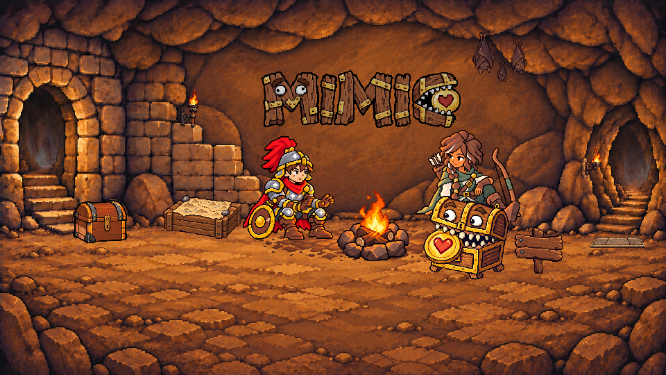
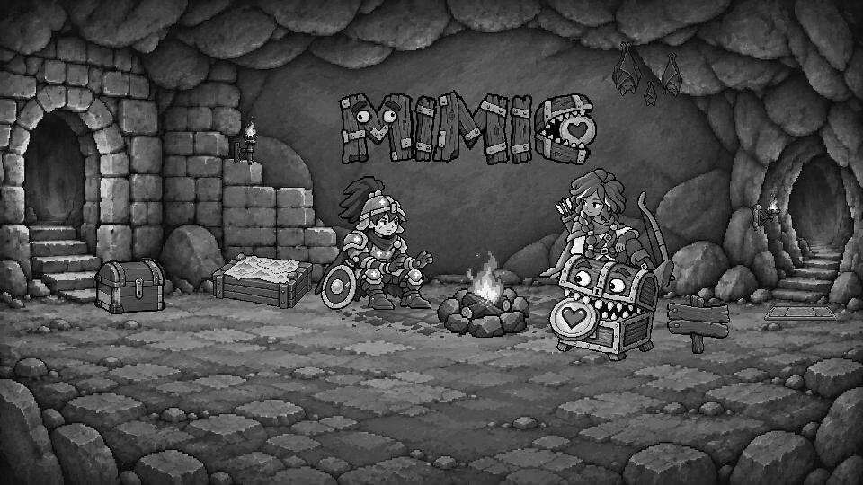

Landing — 壓力板 v02
awaiting-calibration · 僅審外觀 · C
暖灰褐石材、三塊內板與固定外框；以周邊接縫、磨亮邊與前緣暗槽表達無害的舊機關。以下是待選候選，尚未核准。
本輪只比較外觀。座標維持 (850,339)，場景透明度維持 0.85；候選畫布 80×18。寶箱 v04、人物、標題及其他場景內容保持原樣。
實際尺寸與像素細節
v02 · 1× · 80×18v02 · 4× · 最近鄰放大v02 · 真實灰階 1×v02 · 真實灰階 4×
v01 外觀對照
v01 · 原始 1× · 67×14（原透明度）v01 · 4×v01 · 真實灰階 1×
原位置桌機場景
全景隨視窗縮放；下方另附 960×540 的 1× 全景供實際大小審閱。這裡不判斷擺位。
v02 · 寶箱 v04 保留
v01 桌機全景對照
960×540 實際 1× 全景（可水平捲動）
v02 · 960×540 · 1×真實灰階全景

來源、原始嘗試與 prompt
Built-in ImageGen：首次依設計文件原文生成，接續兩次修改；所有原始 PNG 保留。只有 alpha 門檻、透明 RGB 歸零與等比最近鄰取樣，無手繪補圖。
完整 lineage · 尺寸與 SHA-256 manifest